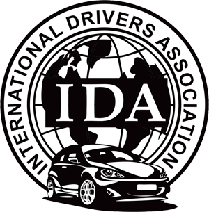

01
СпецЦОН, ул. Ак-Кайнар, 1, 2 этаж
+7 777 115 30 00
Official IDP services / Kazakhstan

Департамент выдачи МВУ в Казахстане
International Drivers Association
Практическая инфраструктура для международных водителей
International Drivers Association — официально аккредитованный партнёр IFA, уполномоченный на оформление и выдачу Международного Водительского Удостоверения в Казахстане — онлайн и через официальные филиалы.
Головной офис · Алматы
ул. Тулебаева, 95/1, 1 этаж — вход со стороны ул. Толе би
Официальные филиалы IDA
Четыре центра обслуживания в ключевых городах Казахстана.
02
СпецЦОН, ул. С. Муканова, 2, 1 этаж
+7 700 115 30 01
Астана
03
СпецЦОН, мкр. Достык, 2343/1, 1 этаж
+7 700 115 30 00
Шымкент
04
СпецЦОН, Северная промышленная зона, 69, 1 этаж
+7 707 115 30 03
Атырау
International driver services